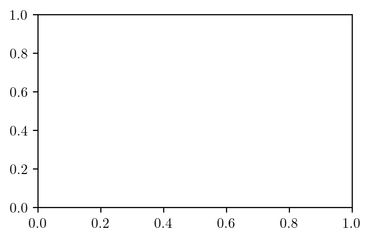
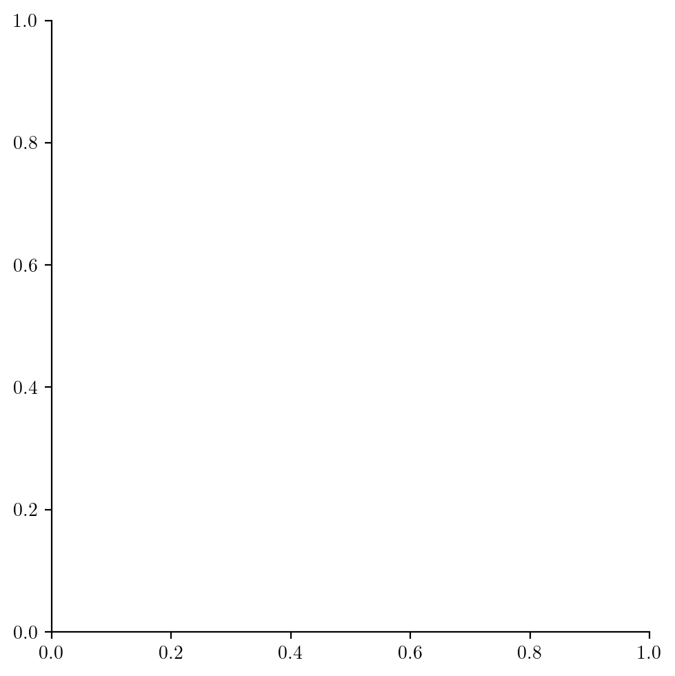
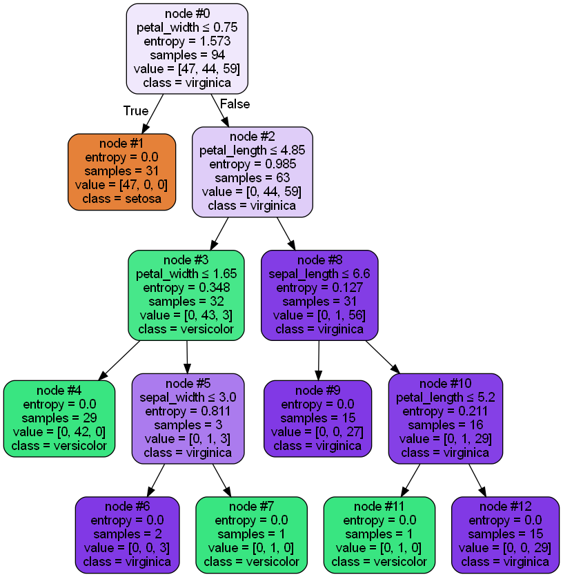
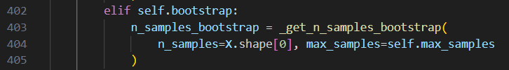

import numpy as np
import pandas as pd
import seaborn as sns
import matplotlib.pyplot as plt
from matplotlib.colors import ListedColormap
from sklearn.model_selection import train_test_split
from sklearn.preprocessing import StandardScaler
from sklearn.datasets import make_moons, make_circles, make_classification
from sklearn.ensemble import RandomForestClassifier
from IPython.display import Image
# To plot trees in forest via graphviz
from sklearn.tree import export_graphviz
import graphviz
try:
from latexify import latexify, format_axes
latexify(columns=2)
except:
pass
%matplotlib inline
%config InlineBackend.figure_format = 'retina'Random Forest Feature Importance
ML
# Load IRIS dataset from Seaborn
iris = sns.load_dataset('iris')
iris| sepal_length | sepal_width | petal_length | petal_width | species | |
|---|---|---|---|---|---|
| 0 | 5.1 | 3.5 | 1.4 | 0.2 | setosa |
| 1 | 4.9 | 3.0 | 1.4 | 0.2 | setosa |
| 2 | 4.7 | 3.2 | 1.3 | 0.2 | setosa |
| 3 | 4.6 | 3.1 | 1.5 | 0.2 | setosa |
| 4 | 5.0 | 3.6 | 1.4 | 0.2 | setosa |
| ... | ... | ... | ... | ... | ... |
| 145 | 6.7 | 3.0 | 5.2 | 2.3 | virginica |
| 146 | 6.3 | 2.5 | 5.0 | 1.9 | virginica |
| 147 | 6.5 | 3.0 | 5.2 | 2.0 | virginica |
| 148 | 6.2 | 3.4 | 5.4 | 2.3 | virginica |
| 149 | 5.9 | 3.0 | 5.1 | 1.8 | virginica |
150 rows × 5 columns
# classes
iris.species.unique()array(['setosa', 'versicolor', 'virginica'], dtype=object)plt.hist(iris.sepal_width, bins=20)(array([ 1., 3., 4., 3., 8., 14., 14., 10., 26., 11., 19., 12., 6.,
4., 9., 2., 1., 1., 1., 1.]),
array([2. , 2.12, 2.24, 2.36, 2.48, 2.6 , 2.72, 2.84, 2.96, 3.08, 3.2 ,
3.32, 3.44, 3.56, 3.68, 3.8 , 3.92, 4.04, 4.16, 4.28, 4.4 ]),
<BarContainer object of 20 artists>)
sns.kdeplot(data=iris, x="sepal_length")--------------------------------------------------------------------------- ValueError Traceback (most recent call last) Input In [66], in <module> ----> 1 sns.kdeplot(data=iris, x="sepal_length") File ~/miniforge3/lib/python3.9/site-packages/seaborn/distributions.py:1701, in kdeplot(data, x, y, hue, weights, palette, hue_order, hue_norm, color, fill, multiple, common_norm, common_grid, cumulative, bw_method, bw_adjust, warn_singular, log_scale, levels, thresh, gridsize, cut, clip, legend, cbar, cbar_ax, cbar_kws, ax, **kwargs) 1697 if p.univariate: 1699 plot_kws = kwargs.copy() -> 1701 p.plot_univariate_density( 1702 multiple=multiple, 1703 common_norm=common_norm, 1704 common_grid=common_grid, 1705 fill=fill, 1706 color=color, 1707 legend=legend, 1708 warn_singular=warn_singular, 1709 estimate_kws=estimate_kws, 1710 **plot_kws, 1711 ) 1713 else: 1715 p.plot_bivariate_density( 1716 common_norm=common_norm, 1717 fill=fill, (...) 1727 **kwargs, 1728 ) File ~/miniforge3/lib/python3.9/site-packages/seaborn/distributions.py:991, in _DistributionPlotter.plot_univariate_density(self, multiple, common_norm, common_grid, warn_singular, fill, color, legend, estimate_kws, **plot_kws) 988 artist = ax.fill_between(support, fill_from, density, **artist_kws) 990 else: --> 991 artist, = ax.plot(support, density, **artist_kws) 993 artist.sticky_edges.x[:] = sticky_support 994 artist.sticky_edges.y[:] = sticky_density File ~/miniforge3/lib/python3.9/site-packages/matplotlib/axes/_axes.py:1632, in Axes.plot(self, scalex, scaley, data, *args, **kwargs) 1390 """ 1391 Plot y versus x as lines and/or markers. 1392 (...) 1629 (``'green'``) or hex strings (``'#008000'``). 1630 """ 1631 kwargs = cbook.normalize_kwargs(kwargs, mlines.Line2D) -> 1632 lines = [*self._get_lines(*args, data=data, **kwargs)] 1633 for line in lines: 1634 self.add_line(line) File ~/miniforge3/lib/python3.9/site-packages/matplotlib/axes/_base.py:312, in _process_plot_var_args.__call__(self, data, *args, **kwargs) 310 this += args[0], 311 args = args[1:] --> 312 yield from self._plot_args(this, kwargs) File ~/miniforge3/lib/python3.9/site-packages/matplotlib/axes/_base.py:487, in _process_plot_var_args._plot_args(self, tup, kwargs, return_kwargs) 484 kw[prop_name] = val 486 if len(xy) == 2: --> 487 x = _check_1d(xy[0]) 488 y = _check_1d(xy[1]) 489 else: File ~/miniforge3/lib/python3.9/site-packages/matplotlib/cbook/__init__.py:1327, in _check_1d(x) 1321 with warnings.catch_warnings(record=True) as w: 1322 warnings.filterwarnings( 1323 "always", 1324 category=Warning, 1325 message='Support for multi-dimensional indexing') -> 1327 ndim = x[:, None].ndim 1328 # we have definitely hit a pandas index or series object 1329 # cast to a numpy array. 1330 if len(w) > 0: File ~/miniforge3/lib/python3.9/site-packages/pandas/core/indexes/base.py:5385, in Index.__getitem__(self, key) 5383 # Because we ruled out integer above, we always get an arraylike here 5384 if result.ndim > 1: -> 5385 disallow_ndim_indexing(result) 5387 # NB: Using _constructor._simple_new would break if MultiIndex 5388 # didn't override __getitem__ 5389 return self._constructor._simple_new(result, name=self._name) File ~/miniforge3/lib/python3.9/site-packages/pandas/core/indexers/utils.py:341, in disallow_ndim_indexing(result) 333 """ 334 Helper function to disallow multi-dimensional indexing on 1D Series/Index. 335 (...) 338 in GH#30588. 339 """ 340 if np.ndim(result) > 1: --> 341 raise ValueError( 342 "Multi-dimensional indexing (e.g. `obj[:, None]`) is no longer " 343 "supported. Convert to a numpy array before indexing instead." 344 ) ValueError: Multi-dimensional indexing (e.g. `obj[:, None]`) is no longer supported. Convert to a numpy array before indexing instead.

sns.displot(iris.sepal_length.values, kind='kde')--------------------------------------------------------------------------- ValueError Traceback (most recent call last) Input In [64], in <module> ----> 1 sns.displot(iris.sepal_length.values, kind='kde') File ~/miniforge3/lib/python3.9/site-packages/seaborn/distributions.py:2218, in displot(data, x, y, hue, row, col, weights, kind, rug, rug_kws, log_scale, legend, palette, hue_order, hue_norm, color, col_wrap, row_order, col_order, height, aspect, facet_kws, **kwargs) 2215 if p.univariate: 2217 _assign_default_kwargs(kde_kws, p.plot_univariate_density, kdeplot) -> 2218 p.plot_univariate_density(**kde_kws) 2220 else: 2222 _assign_default_kwargs(kde_kws, p.plot_bivariate_density, kdeplot) File ~/miniforge3/lib/python3.9/site-packages/seaborn/distributions.py:991, in _DistributionPlotter.plot_univariate_density(self, multiple, common_norm, common_grid, warn_singular, fill, color, legend, estimate_kws, **plot_kws) 988 artist = ax.fill_between(support, fill_from, density, **artist_kws) 990 else: --> 991 artist, = ax.plot(support, density, **artist_kws) 993 artist.sticky_edges.x[:] = sticky_support 994 artist.sticky_edges.y[:] = sticky_density File ~/miniforge3/lib/python3.9/site-packages/matplotlib/axes/_axes.py:1632, in Axes.plot(self, scalex, scaley, data, *args, **kwargs) 1390 """ 1391 Plot y versus x as lines and/or markers. 1392 (...) 1629 (``'green'``) or hex strings (``'#008000'``). 1630 """ 1631 kwargs = cbook.normalize_kwargs(kwargs, mlines.Line2D) -> 1632 lines = [*self._get_lines(*args, data=data, **kwargs)] 1633 for line in lines: 1634 self.add_line(line) File ~/miniforge3/lib/python3.9/site-packages/matplotlib/axes/_base.py:312, in _process_plot_var_args.__call__(self, data, *args, **kwargs) 310 this += args[0], 311 args = args[1:] --> 312 yield from self._plot_args(this, kwargs) File ~/miniforge3/lib/python3.9/site-packages/matplotlib/axes/_base.py:487, in _process_plot_var_args._plot_args(self, tup, kwargs, return_kwargs) 484 kw[prop_name] = val 486 if len(xy) == 2: --> 487 x = _check_1d(xy[0]) 488 y = _check_1d(xy[1]) 489 else: File ~/miniforge3/lib/python3.9/site-packages/matplotlib/cbook/__init__.py:1327, in _check_1d(x) 1321 with warnings.catch_warnings(record=True) as w: 1322 warnings.filterwarnings( 1323 "always", 1324 category=Warning, 1325 message='Support for multi-dimensional indexing') -> 1327 ndim = x[:, None].ndim 1328 # we have definitely hit a pandas index or series object 1329 # cast to a numpy array. 1330 if len(w) > 0: File ~/miniforge3/lib/python3.9/site-packages/pandas/core/indexes/base.py:5385, in Index.__getitem__(self, key) 5383 # Because we ruled out integer above, we always get an arraylike here 5384 if result.ndim > 1: -> 5385 disallow_ndim_indexing(result) 5387 # NB: Using _constructor._simple_new would break if MultiIndex 5388 # didn't override __getitem__ 5389 return self._constructor._simple_new(result, name=self._name) File ~/miniforge3/lib/python3.9/site-packages/pandas/core/indexers/utils.py:341, in disallow_ndim_indexing(result) 333 """ 334 Helper function to disallow multi-dimensional indexing on 1D Series/Index. 335 (...) 338 in GH#30588. 339 """ 340 if np.ndim(result) > 1: --> 341 raise ValueError( 342 "Multi-dimensional indexing (e.g. `obj[:, None]`) is no longer " 343 "supported. Convert to a numpy array before indexing instead." 344 ) ValueError: Multi-dimensional indexing (e.g. `obj[:, None]`) is no longer supported. Convert to a numpy array before indexing instead.

sns.displot(data=iris, x="sepal_length", kind='kde')--------------------------------------------------------------------------- ValueError Traceback (most recent call last) Input In [62], in <module> ----> 1 sns.displot(data=iris, x="sepal_length", kind='kde') File ~/miniforge3/lib/python3.9/site-packages/seaborn/distributions.py:2218, in displot(data, x, y, hue, row, col, weights, kind, rug, rug_kws, log_scale, legend, palette, hue_order, hue_norm, color, col_wrap, row_order, col_order, height, aspect, facet_kws, **kwargs) 2215 if p.univariate: 2217 _assign_default_kwargs(kde_kws, p.plot_univariate_density, kdeplot) -> 2218 p.plot_univariate_density(**kde_kws) 2220 else: 2222 _assign_default_kwargs(kde_kws, p.plot_bivariate_density, kdeplot) File ~/miniforge3/lib/python3.9/site-packages/seaborn/distributions.py:991, in _DistributionPlotter.plot_univariate_density(self, multiple, common_norm, common_grid, warn_singular, fill, color, legend, estimate_kws, **plot_kws) 988 artist = ax.fill_between(support, fill_from, density, **artist_kws) 990 else: --> 991 artist, = ax.plot(support, density, **artist_kws) 993 artist.sticky_edges.x[:] = sticky_support 994 artist.sticky_edges.y[:] = sticky_density File ~/miniforge3/lib/python3.9/site-packages/matplotlib/axes/_axes.py:1632, in Axes.plot(self, scalex, scaley, data, *args, **kwargs) 1390 """ 1391 Plot y versus x as lines and/or markers. 1392 (...) 1629 (``'green'``) or hex strings (``'#008000'``). 1630 """ 1631 kwargs = cbook.normalize_kwargs(kwargs, mlines.Line2D) -> 1632 lines = [*self._get_lines(*args, data=data, **kwargs)] 1633 for line in lines: 1634 self.add_line(line) File ~/miniforge3/lib/python3.9/site-packages/matplotlib/axes/_base.py:312, in _process_plot_var_args.__call__(self, data, *args, **kwargs) 310 this += args[0], 311 args = args[1:] --> 312 yield from self._plot_args(this, kwargs) File ~/miniforge3/lib/python3.9/site-packages/matplotlib/axes/_base.py:487, in _process_plot_var_args._plot_args(self, tup, kwargs, return_kwargs) 484 kw[prop_name] = val 486 if len(xy) == 2: --> 487 x = _check_1d(xy[0]) 488 y = _check_1d(xy[1]) 489 else: File ~/miniforge3/lib/python3.9/site-packages/matplotlib/cbook/__init__.py:1327, in _check_1d(x) 1321 with warnings.catch_warnings(record=True) as w: 1322 warnings.filterwarnings( 1323 "always", 1324 category=Warning, 1325 message='Support for multi-dimensional indexing') -> 1327 ndim = x[:, None].ndim 1328 # we have definitely hit a pandas index or series object 1329 # cast to a numpy array. 1330 if len(w) > 0: File ~/miniforge3/lib/python3.9/site-packages/pandas/core/indexes/base.py:5385, in Index.__getitem__(self, key) 5383 # Because we ruled out integer above, we always get an arraylike here 5384 if result.ndim > 1: -> 5385 disallow_ndim_indexing(result) 5387 # NB: Using _constructor._simple_new would break if MultiIndex 5388 # didn't override __getitem__ 5389 return self._constructor._simple_new(result, name=self._name) File ~/miniforge3/lib/python3.9/site-packages/pandas/core/indexers/utils.py:341, in disallow_ndim_indexing(result) 333 """ 334 Helper function to disallow multi-dimensional indexing on 1D Series/Index. 335 (...) 338 in GH#30588. 339 """ 340 if np.ndim(result) > 1: --> 341 raise ValueError( 342 "Multi-dimensional indexing (e.g. `obj[:, None]`) is no longer " 343 "supported. Convert to a numpy array before indexing instead." 344 ) ValueError: Multi-dimensional indexing (e.g. `obj[:, None]`) is no longer supported. Convert to a numpy array before indexing instead.

iris.groupby("species")["petal_length"].mean()species
setosa 1.462
versicolor 4.260
virginica 5.552
Name: petal_length, dtype: float64# Pairplot
sns.pairplot(iris, hue="species")
# Divide dataset into X and y
X, y = iris.iloc[:, :-1], iris.iloc[:, -1]
rf = RandomForestClassifier(n_estimators=10,random_state=0, criterion='entropy', bootstrap=True)
rf.fit(X, y)RandomForestClassifier(criterion='entropy', n_estimators=10, random_state=0)In a Jupyter environment, please rerun this cell to show the HTML representation or trust the notebook.
On GitHub, the HTML representation is unable to render, please try loading this page with nbviewer.org.
RandomForestClassifier(criterion='entropy', n_estimators=10, random_state=0)
# Visualize each tree in the Random Forest
for i, tree in enumerate(rf.estimators_):
# Create DOT data for the i-th tree
dot_data = export_graphviz(tree, out_file=None,
feature_names=iris.columns[:-1],
class_names=iris.species.unique(),
filled=True, rounded=True,
special_characters=True,
impurity=True,
node_ids=True)
# Use Graphviz to render the DOT data into a graph
graph = graphviz.Source(dot_data)
# Save or display the graph (change the format as needed)
graph.render(filename=f'../figures/ensemble/feature-imp-{i}', format='pdf', cleanup=True)
graph.render(filename=f'../figures/ensemble/feature-imp-{i}', format='png', cleanup=True)# Visualize the tree
Image(filename='../figures/ensemble/feature-imp-0.png')
- \(t\) = node
- \(N_t\) = number of observations at node \(t\)
- \(N_{t_L}\) = number of observations in the left child node of node \(t\)
- \(N_{t_R}\) = number of observations in the right child node of node \(t\)
- \(p(t)=N_t/N\) = proportion of observations in node \(t\)
- \(X_j\) = feature \(j\)
- \(j_t\) = feature used at node \(t\) for splitting
- \(i(t)\) = impurity at node \(t\) (impurity = entropy in this case)
- \(M\) = number of trees in the forest
For a particular node:
- Information gain at node \(t\) = Impurity reduction at node \(t\) = entropy(parent) - weighted entropy(children)
\(\Delta i(t) = i(t) - \frac{N_{t_L}}{N_t} i(t_L) - \frac{N_{t_r}}{N_t} i(t_R)\)
For a tree:
Importance of feature \(X_j\) is given by:
\(\text{Imp}(X_j) = \sum_{t \in \varphi_{m}} 1(j_t = j) \Big[ p(t) \Delta i(t) \Big]\)
For a forest:
Importance of feature \(X_j\) for an ensemble of \(M\) trees \(\varphi_{m}\) is:
\[\begin{equation*} \text{Imp}(X_j) = \frac{1}{M} \sum_{m=1}^M \sum_{t \in \varphi_{m}} 1(j_t = j) \Big[ p(t) \Delta i(t) \Big] \end{equation*}\]
1-1/np.e0.6321205588285577N = 150
(1-1/np.e)*N94.81808382428365rf.feature_importances_array([0.09864748, 0.03396026, 0.32312193, 0.54427033])s = []
for tree in rf.estimators_:
s.append(tree.feature_importances_)np.array(s).mean(axis=0)array([0.09864748, 0.03396026, 0.32312193, 0.54427033])tree_0 = rf.estimators_[0]
tree_0.feature_importances_array([0.00397339, 0.01375245, 0.35802357, 0.6242506 ])# take one tree
tree = rf.estimators_[0].tree_tree.featurearray([ 3, -2, 2, 3, -2, 1, -2, -2, 0, -2, 2, -2, -2], dtype=int64)
# Creating a mapping of feature names to the feature indices
mapping = {-2: 'Leaf', 0: 'sepal_length', 1: 'sepal_width', 2: 'petal_length', 3: 'petal_width'}
# print the node number along with the corresponding feature name
for node in range(tree.node_count):
print(f'Node {node}: {mapping[tree.feature[node]]}')Node 0: petal_width
Node 1: Leaf
Node 2: petal_length
Node 3: petal_width
Node 4: Leaf
Node 5: sepal_width
Node 6: Leaf
Node 7: Leaf
Node 8: sepal_length
Node 9: Leaf
Node 10: petal_length
Node 11: Leaf
Node 12: Leafid = 2
tree.children_left[id], tree.children_right[id](3, 8)def print_child_id(tree, node):
'''
Prints the child node ids of a given node.
tree: tree object
node: int
'''
# check if leaf
l, r = tree.children_left[node], tree.children_right[node]
if l == -1 and r == -1:
return None, None
return tree.children_left[node], tree.children_right[node]
print_child_id(tree, 0)(1, 2)tree.impurityarray([1.57310798, 0. , 0.98464683, 0.34781691, 0. ,
0.81127812, 0. , 0. , 0.12741851, 0. ,
0.2108423 , 0. , 0. ])def all_data(tree, node):
'''
Returns all the data required to calculate the information gain.
'''
# get the child nodes
left, right = print_child_id(tree, node)
# check if leaf, then return None
if left is None:
return None
# get the data
entropy_node = tree.impurity[node]
entropy_left = tree.impurity[left]
entropy_right = tree.impurity[right]
# N = total number of samples considered during bagging, therefore, it is equal to the number of samples at the root node
N = tree.n_node_samples[0]
# n_l = number of samples at the left child node
n_l = tree.n_node_samples[left]
# n_r = number of samples at the right child node
n_r = tree.n_node_samples[right]
# n_t = total number of samples at the node
n_t = n_l + n_r
feature = mapping[tree.feature[node]]
# calculate the information gain
info_gain_t = entropy_node - (n_l/n_t * entropy_left + n_r/n_t * entropy_right)
return info_gain_t, N, n_l, n_r, n_t, feature# Calculate the importance of each features using the information gain for a tree
scores = {}
for node in range(tree.node_count):
# Add the information gain of the node to the dictionary if it is not a leaf node
try:
ig, N, n_l, n_r, n_t, feature = all_data(tree, node)
p_t = n_t / N
scores[feature] = scores.get(feature, 0) + p_t * ig
# Skip if it is a leaf node
except:
continue
ser = pd.Series(scores)
info_gain_tree = ser/ser.sum()
info_gain_tree.sort_values(ascending=False)petal_width 0.639307
petal_length 0.340335
sepal_width 0.016459
sepal_length 0.003899
dtype: float64# Feature importance using sklearn for a tree
sklearn_imp = tree.compute_feature_importances()
pd.Series(sklearn_imp, index=iris.columns[:-1]).sort_values(ascending=False)petal_width 0.624251
petal_length 0.358024
sepal_width 0.013752
sepal_length 0.003973
dtype: float64# Feature importance using sklearn for the forest
sklearn_imp_forest = np.array([x.tree_.compute_feature_importances() for x in rf.estimators_]).mean(axis=0)
pd.Series(sklearn_imp_forest, index=iris.columns[:-1]).sort_values(ascending=False)petal_width 0.544270
petal_length 0.323122
sepal_length 0.098647
sepal_width 0.033960
dtype: float64ser = pd.Series(sklearn_imp_forest, index=iris.columns[:-1])
ser.plot(kind='bar', rot=0)
format_axes(plt.gca())
plt.savefig('../figures/ensemble/feature-imp-forest.pdf', bbox_inches='tight')
Aside:
tree.tree_.feature returns the feature used at each node to divide the node into two child nodes with the below given mapping. The sequence of the features is the same as the column sequence of the input data.
- -2: leaf node
- 0: sepal_length
- 1: sepal_width
- 2: petal_length
- 3: petal_width
tree.tree_.children_left[node] returns the node number of the left child of the node
tree.tree_.children_right[node] returns the node number of the right child of the node
if there is no left or right child, it returns -1
Bootstrap code:
in the random_forest.fit() function
